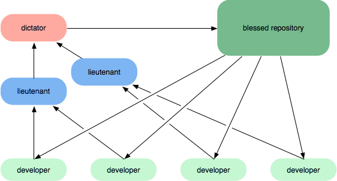

Advanced Concepts
Presenter: Justin GrantPreparation - please have the following things open:
- TotalTerminal (will popup the terminal when needed)
- GitTraining (https://github.com/jlgrock/gitTraining)
gitk
A platform independent gui for viewing commits that will show bisect operations
gitk & #platform independent gui for viewing commits # will show bisect operations
View Logs from the command line
git log --pretty=oneline -3
OR
git log HEAD~5..HEAD~2
OR
git whatchanged -p git rebase -i HEAD~n
The following shows a few ways to see logs in various formats. The tilde in this case, HEAD~2 means the parents parent.
Great Explanation of Caret and tilde in Git
http://paulboxley.com/blog/2011/06/git-caret-and-tilde
Go check it out!
Rolling Back
git reset HEAD~1
git reset --soft HEAD~1
git reset --hard HEAD~1
ONLY IF YOU HAVEN'T PUSHED
This essentially allows the user to remove commits from the stack. Well, technically, it moves the pointer further back on the linked list. This is great if you are just trying to roll back local work. If you've already pushed your changes up to a repository, though, you won't be able to do this. This is because technically you'll be 1 push behind what the repository (even though it was your push). To push, you need to be up to date. So what do we do in this situation? The difference between the "hard" and "soft" version of the reset is that the hard version will truncate the later commits. The soft does not touch the index or working tree at all, but does still move the head pointer. This leaves your files as "changes to be committed" with the "git status" command. The default is actually "mixed" which resets the index, but not the working tree (i.e., the changed files are preserved but not marked for commit).
Reverting
git revert HEAD~1
Similar to reset, revert actually goes and finds the changes that were committed, undoes the changes and recommits them. This is different, because it isn't so much like it never happened, as it is a fix to an old commit. This is the only way you can modify commits that you have already pushed.
Creating Orphaned Branches
git checkout --orphan newbranchname
This is really useful for docs/related materials that has no relation to the code in another branch. This will create new fresh, no content branch. Keeps the current content (staged), just in case you want to add them later.create some files with some changes checked in.
To visualize this, go to closure tools site and check the gh-pages branch. If you open "gitk all" - note that the new branch has no line to anything, indicating that it is not connected to the current code.
Cloning From Friends
So the easiest way to OK, this one is just to get your feet wet and to make sure that everyone remembers how to clone. The easiest way to is to create a shared repository in a shared directory. In the example here, I'm sharing a repository in Dropbox. This has created two repositories. A bare repository, which is used by anyone to check into (please note, it uses file permissions from your OS) and another that you can work on. If anyone else has access to the bare repository, they they can also use this as their repo.
Another Way To Clone From Friends
cd
touch git-daemon-export-ok
git daemon
So sometimes you have a hard time sharing folders on a network. Git comes with a simple tool to share the code much like a server does. This will share the code using the git protocol, which is the most efficient for transferring repositories. However, this enforces no authentication (everything is anonymous), so this is only suggested for a read-only cloning and synchronization.
Creating Patches
git format-patch master..Issue54
Applying Patches
git am -s 0001-my-fix.patch 0002-my-fix.patch
OR
git am -s 0*
First, you need to check to see what you need to create a patch on. You can check the logs using the first methods. The first states to use the pretty formatting to oneline. This helps read the comments better. If you need the entire commit log, leave this flag off. This also states to go back 3 entries in the log. Very useful.
Sometimes, you know a range of commits. It was between 3 and 5 commits back. Using the second option, this will show all logs in a range. Hopefully, though, you were smart and created a branch for your changes. Yes, I'm going to harp on this, as it is very important and helpful to create branches in Git. Once you know your range, you can give that to the "git format-patch" command. In the example given, it says everything from the point of branching to hte head of Issue54. What git format-patch master does is look at the commits between master and your current branch, in this case Issue54, and create a patch file per commit.
Please note that patches are most useful when applying changes from systems other than git.
Bundle
git bundle create repo.bundle master
Unbundle
git clone repo.bundle -b master repo
Especially useful for one time copies for offline mode.
Delta Bundle
git bundle create commits.bundle master ^9a466c5
Verify
git clone repo.bundle -b master repo
List Branch heads
git bundle list-heads commits.bundle
Fetch from the file
git fetch commits.bundle master:other-master
If you are creating a delta bundle, please make sure not to just send the changes. There needs to be some common ancestory so that git can line it up. The second command, "git verify", will check it to make sure that it can line up prior to application.
Aliasing
git config --global alias.ir "git log rebase -i origin/master"
Or edit the .gitconfig directly with
git config -e --global
Remembering from the git basics, there are three places where you can keep your git config. The first relies in the git install (system - stored in the install dir), the second is for your user (global - in your ~/.gitconfig) and the third is for your project (in the project .git folder). Why would we want to try and figure out all the locations though, right? If we use the git config commands we can add a simple alias (as shown), or edit the config file directly, using git itself.
My Aliasing Examples
Just for everyones benefit, I'll walk through a couple useful examples that I have provided, but I hope everyone will go out and start finding their own helpful commands and share them with folks on their teams.
Aliasing Urls
Another helpful thing you can do to your config files is to store your more useful urls. Then, you no longer have to remember them.
Refspecs
Breakdown:
- remote - a definition of a remote server.
- url - the location of the remote server
- fetch - the refspec of branch, which is a tuples of which branches we’d like fetched from the remote repository, and What to call those branches in the local git repository after we’ve fetched them when we use the git fetch and git pull commands. The star is a wildcard, but can only be used at the end of a line.
- branch - a definition of a branch.
- remote - the remote to use by default
- merge - the refspec of where to look locally for branches to use when doing a merge operation
Refspecs
What if I add the following?
narrows new downloads to a specific subset can have as many fetch patterns. This is useful if your QA department keeps their code in separate branches and don't care to download all of the branches.
Cherry Picking
Cherry Picking a Single Commit
git cherry-pick a5b2ee
Cherry Picking a Range
git cherry-pick a5b2ee..fd341b
Cherry Picking gives the user the ability to grab on or more changes that you determine are necessary, without merging an entire branch. This might be useful, for example, if you have a bug fix that can be applied to the branch you are working on.
To do this, specify one or more hashes, as found in the log searches aforementioned. Then, make sure you are in the branch you want to merge these changes to and use the "git cherry-pick" command.
Squashing a Merge
git merge --squash <branch>
A Squash merge is a cool tool that shouldn't be used by everyone, but for the groups that need it, it's invaluable.
The git merge squash tool combine all of your commits in a branch into one commit and merge it in.
Although this makes everyone look extremely intelligent, since they were able to knock out things perfectly in one adjustment, or at least so the history would have us believe. The problem is that this destroys the commit history, which can sometimes be invaluable.
The groups that should use these are the folks that need to make sure that every commit must compile and pass all appropriate tests. You can't always guarantee this, especially if you are changing and applying commits like we all like to code.
Rewriting History
Rebase Command
git rebase --interactive HEAD~4
Understanding a Rebase
Git is so awesome that it lets you rewrite history.
Be warned: It is considered bad practice to rebase commits which you have already pushed to a remote repo. Doing so may invoke the wrath of the git gods.
The difference between a Merge and a Rebase is that a Merge is the action of taking all the changes in one branch and merge them into another branch in one big commit - a Rebase says I want the point at which I branched to move to a new starting point, meaning that I have to do this step-by-step.
Rebase allows you to easily change a series of commits, reordering, editing, or squashing commits together into a single commit. By adding the "--interactive" or "-i", you put this into interactive mode, which will make git have you participate in the layering of code changes. This can be skipped, but not until you get the hang of it and really know what you are doing (at which point, you can even set up using "git config branch.autosetuprebase" to always rebase).
Pick
Adjust the ordering
Reword
Adjust the comment on a commit.
Edit
Edit a file before applying commit.
Pick is used to include a commit. By default you will be given a list of the commits you chose to rebase, in order of oldest (top) to newest (bottom). Rearranging the order of the pick commands will change the order of the commits when you begin the rebase.
Example Rebase Command
(Remember to click on the image)
The following is the example of a rebase command. You can see that it takes the branch commits and layers it ontop of the current branch. At which point, you can apply changes at the same time, and thus rewrite history.
Squashing/Fixup Rebase
This is an example of a squash rebase. Please note that this is different than a squash merge in the regard. Although, it has the same detremental effect on the history.
Git-SVN Bridge
Clone
git svn clone -s http://example.com/my_subversion_repo local_dir
Updating Your Code (Must Rebase from the Server)
git svn rebase
Updating Your Code (git push will fail)
git svn dcommit
Now that you know how to use rebase, you can use git-svn. There are a few rules you should follow when using Git as a Subversion client. Many of these are due to the fact that Git is a much more capable system than Subversion and some of the Git features simply do not work in Subversion.
Do not dcommit Git merge commits to the Subversion repository. Subversion doesn’t handle merges in the same way as Git, and this will cause problems. This means you should keep your Git development history linear (i.e., no merging from other branches, just rebasing).
Also, same as with git, do not mess with ordering of commits once you have sent it to an external source.
Adding - Patch Mode
git add -p <filename>
Normally, if we do "git add", it will put the change for both the firstName and lastName into the index. What if we wanted to segregate these out? Well, we could just take a copy of the file, edit out one change, add it, copy the file back, and then add the second change. But we can use Git to help us here with "git add -p"
Watch out when using this as you can put your code into an uncompileable state pretty easily.
The most useful responses when applying this is "y=yes", "n=no", and "s", which will split by minute of the edit.
Commit Related Git Hooks
- pre-commit
- prepare-commit-msg
- commit-msg
- post-commit
Email/Patch Related Git Hooks
- applypatch-msg
- pre-applypatch
- post-applypatch
Other Git Hooks
- pre-rebase
- post-checkout
- post-merge
- pre-receive/update (server only)
- post-receive (server only)
The hooks are all shell or batch scripts stored in the "hooks" subdirectory of the Git directory. In most projects, that’s ".git/hooks". There are a number of samples, each tells you how to use it.
hands down, the most useful to developers is going to be the pre-commit, pre-rebase, and post-merge. A good example of one that almost everyone could use here is that you can set a quick script to verify that everything builds and passes test cases as part of your pre-commit, guaranteeing that everything builds according to your unit/integration testing. If there are no problems, it will complete the commit.
Git Bisect
git bisect start
Can leave out the version if it is the current
git bisect bad [bad_commit]
git bisect good [good_commit]
At which point you tell it
git bisect [good/bad]
Git Bisect is a powerful tool to find out where something has happened. To do this, you mark a point where things were the way you liked it ("git bisect good") and another where you know it is bad ("git bisect bad"). Then, git will start bisecting, which is a binary search algorithm where you provide the input on the path. By this, I mean, it will pick the middle commit and see if it was bad there. This will give it the direction to go next, picking the middle in the direction indicated by the result.
Each time it changes to a new checkout, you are required to tell it whether the current one is good or bad.
Workflows - Centralized Workflow

One of the amazing things about Git is that because of its distributed nature and super branching system, you can easily implement pretty much any workflow you can think of relatively easily.
As the Centralized Workflow, aka the Subversion-Style Workflow, is very common Git workflow, especially from people transitioning from a centralized system. Git will not allow you to push if someone has pushed since the last time you fetched, so a centralized model where all developers push to the same server works just fine.
Workflows - Integration-Manager Workflow

Integration Manager Workflow Another common Git workflow is where there is an integration manager—a single person who commits to the 'blessed' repository, and then a number of developers who clone from that repository, push to their own independent repositories and ask the integrator to pull in their changes. This is the type of development model you often see with open source or GitHub repositories.
Workflows - Dictator and Lieutenants Workflow
Dictator and Lieutenants Workflow For more massive projects, you can setup your developers similar to the way the Linux kernel is run, where people are in charge of a specific subsystem of the project ('lieutenants') and merge in all changes that have to do with that subsystem. Then another integrator (the 'dictator') can pull changes from only his/her lieutenants and push those to the 'blessed' repository that everyone then clones from again.
Again, Git is entirely flexible about this, so you can mix and match and choose the workflow that is right for you.